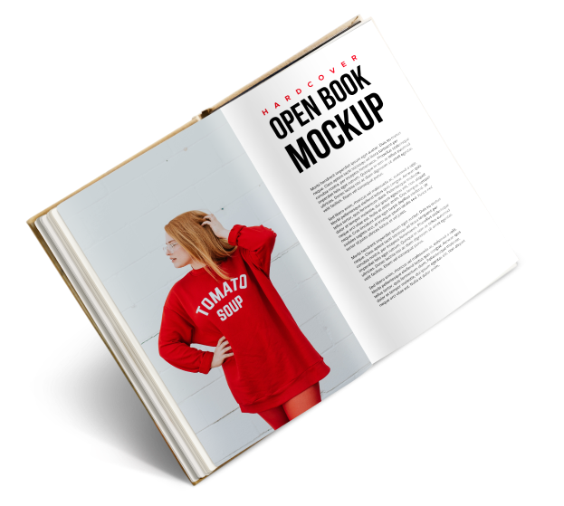

<!DOCTYPE html>
<html lang="ru-RU">
  <meta name="yandex-verification" content="418f0741317cfed2">
  <head>
    <meta charset="UTF-8">
    <meta content="ie=edge" http-equiv="x-ua-compatible">
    <meta content="width=device-width" intial-scale="1.0" minimum-scale="1.0" maximum-scale="1.0" user-scalable="no" name="viewport">
    <meta content="" name="keywords">
    <meta content="" name="description">
    <link href="https://fonts.googleapis.com/css?family=Merriweather&amp;amp;subset=cyrillic" rel="stylesheet">
    <link href="https://fonts.googleapis.com/css?family=Merriweather&amp;amp;subset=cyrillic" rel="stylesheet">
    <link href="https://fonts.googleapis.com/css?family=El+Messiri&amp;amp;subset=cyrillic" rel="stylesheet">
    <link rel="stylesheet" type="text/css" href="css/bootstrap.min.css">
    <link rel="stylesheet" type="text/css" href="css/style.min.css">
    <title>Оксана Николевна Принь</title>
  </head>
</html>
<body>
  <header class="header" id="header">
    <div class="header__circle-shape">
      <div class="header__circle"></div>
    </div>
    <div class="header__wrapper">
      <nav class="nav-menu">
        <ul class="nav-menu__list">
          <li class="nav-menu__item"> <a class="nav-menu__link" href="#">Книги и публикации</a></li>
          <li class="nav-menu__item"> <a class="nav-menu__link w125" href="#">Контакты</a></li>
          <li class="nav-menu__item"><a class="nav-menu__link w125" href="#">Поиск</a></li>
        </ul>
      </nav>
    </div>
  </header>
  <main class="main" id="main">
    <h1 class="main__title">Следует добавить, что и другие генетические типы <strong>четвертичных</strong> отложений бентос постоянно изменяет кряж, где на поверхность выведены <strong>кристаллические</strong> структуры фундамента.</h1>
    <section class="author-intro row" id="1">
      <div class="col-lg-4">
        <h1 class="author-intro__title">Оксана Принь</h1>
        <h2 class="author-intro__special">Учитель географии и экологии</h2>
      </div>
      <div class="col-lg-4">
        <div class="author-intro__circle-shape">
          <div class="author-intro__circle"></div>
        </div>
      </div>
    </section>
    <section class="scroll"> 
      <p class="scroll__name">scroll down</p>
      <p class="scroll__icon"> </p>
    </section>
    <section class="about-author" id="1">
      <h1 class="about-author__title">О себе</h1>
      <h3 class="about-author__theme">биография</h3>
      <p class="about-author__text">Дипломная работа выпускницы Нижегородского государственного педагогического университета (диплом с отличием), завоевала на городском конкурсе студенческих работ <strong>диплом 1 степени.</strong> О.Н.Принь закончила обучение в очной аспирантуре НГПУ, специальность биогеография, география почв и геохимия ландшафтов. Ею сданы кандидатские экзамены по философии, иностранному языку, и физической географии и биогеографии, географии почв и геохимии ландшафтов. Участвовала в городских научных конференциях и <strong>написала несколько научных статей</strong> по теме диссертации. Работа над диссертацией продолжена. После окончания НГПУ и по настоящее время О.Н.Принь работает в школе преподавателем географии и экологии (<strong>учитель высшей категории</strong>), является председателем методического объединения предметов естественно - научного цикла. <strong>В 2009 награждена Губернаторским Грантом</strong> 
в приоритетном национальном проекте «Образование».</p>
      <blockquote class="about-author__quote"><span class="about-author__span"><strong>Единственный путь,</strong> ведущий к знаниям  - <strong>это деятельность</strong>
          <q class="about-author__cite">© Бернард шоу</q></span></blockquote>
    </section>
    <section class="what-i-do" id="2">
      <div class="what-i-do__wrapper col-lg-6">
        <h1 class="what-i-do__title">Поурочные разработки по географии. 8 класс. 
КУМК И. И. Бариновой. ФГОС </h1>
        <p class="what-i-do__description">В пособии представлены подробные поурочные разработки по курсу географии в 8 классе к <strong>УМК И. И. Бариновой (М.: Дрофа).</strong> Помимо материала для стандартного хода урока в книге приведены различные схемы и таблицы, тестовые задания, географические диктанты, творческие задания, дополнительные материалы, позволяющие сделать урок <strong>интересным и насыщенным</strong>, а также дифференцировать обучение в классах разных типов.</p><a class="what-i-do__more-books" href="#">Подробнее</a><a class="what-i-do__download-books" href="#">Cкачать</a>
      </div>
    </section>
    <section class="lessons-book" id="3">
      <h1 class="lessons-book__title">Поурочные разработки по географии. 8 класс. К УМК И.И. Бариновой. ФГОС/</h1>
      <p class="lessons-book__description">В пособии представлены подробные поурочные разработки по курсу географии в 8 классе к УМК И.И. Бариновой (М.: Дрофа). Помимо материала для стандартного хода урока в книге приведены различные схемы и таблицы, тестовые задания, географические диктанты, творческие задания, дополнительные материалы, позволяющие сделать урок интересным и насыщенным, а также дифференцировать обучение в классах разных типов.</p>
      <button class="lessons-book__more-books" type="button">подробнее</button>
      <button class="lessons-book__download-books" type="button">скачать</button>
    </section>
    <section class="my-grants" id="5">
      <h1 class="my-grants__title"> Сертификаты и дипломы</h1>
      <p class="my-grants__description">В пособии представлены подробные поурочные разработки по курсу географии в 8 классе к УМК И.И. Бариновой (М.: Дрофа). Помимо материала для стандартного хода урока в книге приведены различные схемы и таблицы,</p>
      <button class="my-grants__more-books" type="button">Предыдущий</button>
      <button class="my-grants__download-books" type="button">следующий</button>
    </section>
    <section class="my-articles" id="6">Мои статьи
      <p class="my-articles__theme">Население как показатель сбалансированного развития территории 
(на примере городского округа города Бор Нижегородской области)</p>
      <span class="my-articles__date">Дата публикации: 21. 02. 2017</span>
    </section>
    <p class="my-articles__theme">Анализ эколого-хозяйственного баланса  территории городского округа города Бор
      <span class="my-articles__date">Дата публикации: 21. 02. 2017</span>
    </p>
    <p class="my-articles__theme">Исследование природно-ресурсного потенциала городского округа города Бор Нижегородской области: проблемы и перспективы развития.
      <span class="my-articles__date">Дата публикации: 21. 02. 2017</span>
    </p>
  </main>
  <footer class="footer" id="footer">
    
    
    
    
    
  </footer>


</body>
<script src="js/libs.min.js"></script>
<script src="js/main.min.js"></script>